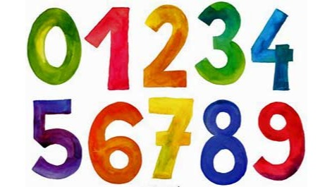

La historia de nuestros números es una historia muy antigua. No se sabe con certeza cuánto tiempo hace que los humanos comenzaron a usarlos pero lo que sí podemos asegurar es que desde el principio el hombre necesitó palabras para expresar cantidades. Contar cuántas personas había en una cueva, expresar a qué distancia estaba el río o tomar alguna medida… había la misma necesidad de comunicarse usando números que la que existe hoy en día.
Al principio los hombres empiezan a contar puesto que es necesario
saber lo que se tiene y lo que se puede cambiar. Los hombres empiezan a contar y usaran las piedras, los dedos, muescas en bastones, nudos en una cuerda etc. Calcular significa contar con piedras, “calculus” es
piedra en latín. Pero poco a poco según la cantidad es mayor, se hace necesario un método más práctico.
Casi siempre se llegaba a la misma solución al alcanzar un determinado número se hace una marca diferente que representa a todos.
Este número es la base. Y la base que más se ha venido utilizando por las distintas culturas fue la base 10, es muy probable que sea por ser igual al número de los dedos con los que contamos.
Desde hace miles de años la gran mayoría de culturas ha contado con unidades, decenas, centenas, etc., vamos igual que lo hacemos hoy en día, sin embargo lo que ha sido muy distinto es la forma de representar los números.
Refencias:
https://www.finanzasparatodos.es/gepeese/es/fichasDidacticas/humorFD/Historia__de__los__numeros.pdf
El dígito es el número que se expresa mediante un solo guarismo, término usado para nombrar aquel símbolo que describe una cantidad. Es decir, el dígito es aquel número que se escribe con un solo signo. Así, en el sistema decimal, que es el que hemos adoptado, tenemos diez dígitos: 0, 1, 2, 3, 4, 5, 6, 7, 8 y 9. ¿Cuáles son los dígitos en comun? Está formado por diez símbolos llamados dígitos: 0, 1, 2, 3, 4, 5, 6, 7, 8 y 9. Con estos dígitos, que se pueden combinar, se representan todos los números, los cuales sirven para contar y ordenar. 
Se conoce como números enteros o simplemente enteros al conjunto numérico que contiene a la totalidad de los números naturales, a sus inversos negativos y al cero.
Los números enteros se representan en una recta numérica, teniendo el cero en medio y los números positivos (Z+) hacia la derecha y los negativos (Z-) a la izquierda, ambos lados extendiéndose hasta el infinito. Normalmente se transcriben los negativos con su signo (-), cosa que no hace falta para los positivos, pero puede hacerse para resaltar la diferencia.
La incorporación de los números enteros a los números naturales permite agrandar el espectro de cosas cuantificables, abarcando cifras negativas que sirven para llevar el registro de las ausencias o las pérdidas, o incluso para ciertas magnitudes como la temperatura, que emplea valores sobre y bajo cero.
Los números enteros pueden sumarse, restarse, multiplicarse o dividirse tal y como los números naturales, pero siempre obedeciendo a las normas que determinan el signo resultante, de la siguiente manera:
Suma. Para determinar la suma de dos enteros, debe prestarse atención a sus signos, según lo siguiente:
Si ambos son positivos o uno de los dos es cero, simplemente se deben sumar sus valores absolutos y se conserva el signo positivo. Por ejemplo: 1 + 3 = 4.
Si ambos signos son negativos o uno de los dos es cero, simplemente se deben sumar sus valores absolutos y se conserva el signo negativo. Por ejemplo: -1 + -1 = -2.
Si tienen signos diferentes, en cambio, deberá restarse el valor absoluto del menor al del mayor, y se conservará en el resultado el signo del mayor. Por ejemplo: -4 + 5 = 1.
Resta. La resta de números enteros atiende también al signo, dependiendo de cuál sea mayor y cuál menor en cuanto a valor absoluto, obedeciendo a la regla de que dos signos iguales juntos se convierten en el contrario:
Resta de dos números positivos con resultado positivo: 10 – 5 = 5
Resta de dos números positivos con resultado negativo: 5 – 10 = -5
Resta de dos números negativos con resultado negativo: (-5) – (-2) = (-5) + 2 = -3
Resta de dos números negativos con resultado positivo: (-2) – (-3) = (-2) + 3 = 1
Resta de dos números de distinto signo y resultado negativo: (-7) – (+6) = -13
Resta de dos números de distinto signo y resultado positivo: (2) – (-3) = 5.
Multiplicación. La multiplicación de enteros se realiza multiplicando normalmente los valores absolutos, y luego aplicando la regla de los signos, que estipula lo siguiente:
Más por más igual a más. Por ejemplo: (+2) x (+2) = (+4)
Más por menos igual a menos. Por ejemplo: (+2) x (-2) = (-4)
Menos por más igual a menos. Por ejemplo: (-2) x (+2) = (-4)
Menos por menos igual a más. Por ejemplo: (-2) x (-2) = (+4)
División. Funciona igual que la multiplicación. Por ejemplo:
(+10) / (-2) = (-5)
(-10) / 2 = (-5)
(-10) / (-2) = 5.
10 / 2 = 5.